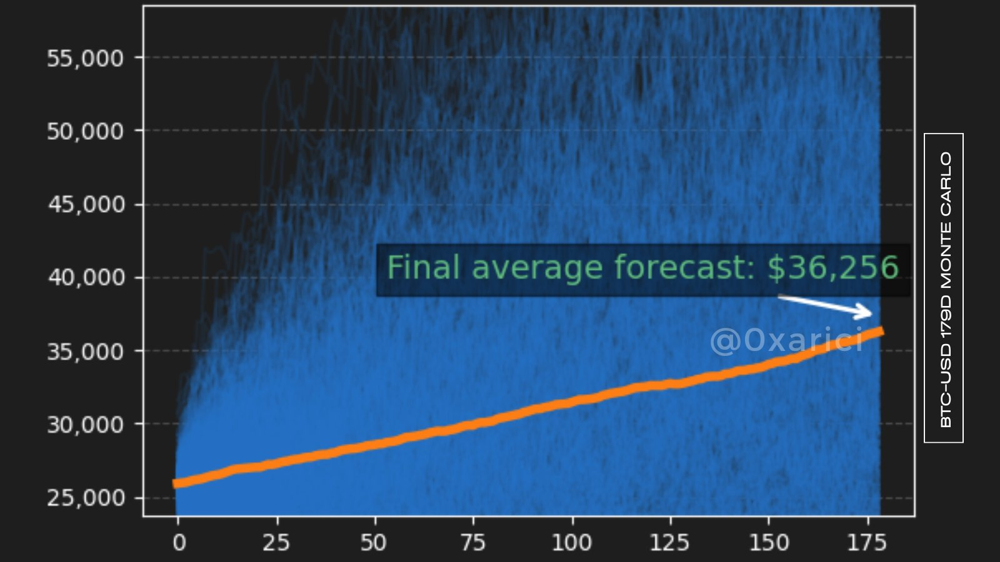

Bitcoin Halving
Bitcoin Halving (Yarılanma) süreci, bilindiği üzere, blokların süresine göre farklı zaman dilimlerinde meydana gelmektedir. Bu bağlamda, Monte Carlo simülasyonunu kullanarak Bitcoin'in ne zaman yarılanma sürecine gireceğine dair iki farklı analiz gerçekleştirdik.

Simülasyon 1
İlk simülasyonumuz, Bitcoin için 179 günlük Hiperbolik Dağıtımla gerçekleştirilen Monte Carlo Simülasyon sonuçlarıdır.
İkinci Simülasyon
İkinci simülasyonumuz ise Bitcoin için 228 günlük Hiperbolik Dağıtımla yapılmıştır.
Sonuç
Bu simülasyonlardan elde edilen verilere göre, Bitcoin'in yarılanma değeri tahminen 36.256$ ile 40.026$ arasında bir değerde gerçekleşecektir.
Global taraf
Son dönemde gözlemlediğimiz üzere, Bitcoin fiyatlarında yaşanan düşüş, global likidite trendleri ile uyumlu değil. Global ölçekte likidite artışına paralel olarak, özellikle Çin'den piyasaya sürekli bir likidite girişi yaşanmaktadır. Teorik olarak, bu iki olgu arasında pozitif bir korelasyon beklenirdi. Ancak mevcut durumda, Bitcoin'in fiyat performansı bu korelasyona uymuyor.
Bu durum, piyasalarda farklı dinamiklerin veya etmenlerin Bitcoin fiyat hareketlerini etkileyebileceğine işaret ediyor olabilir.